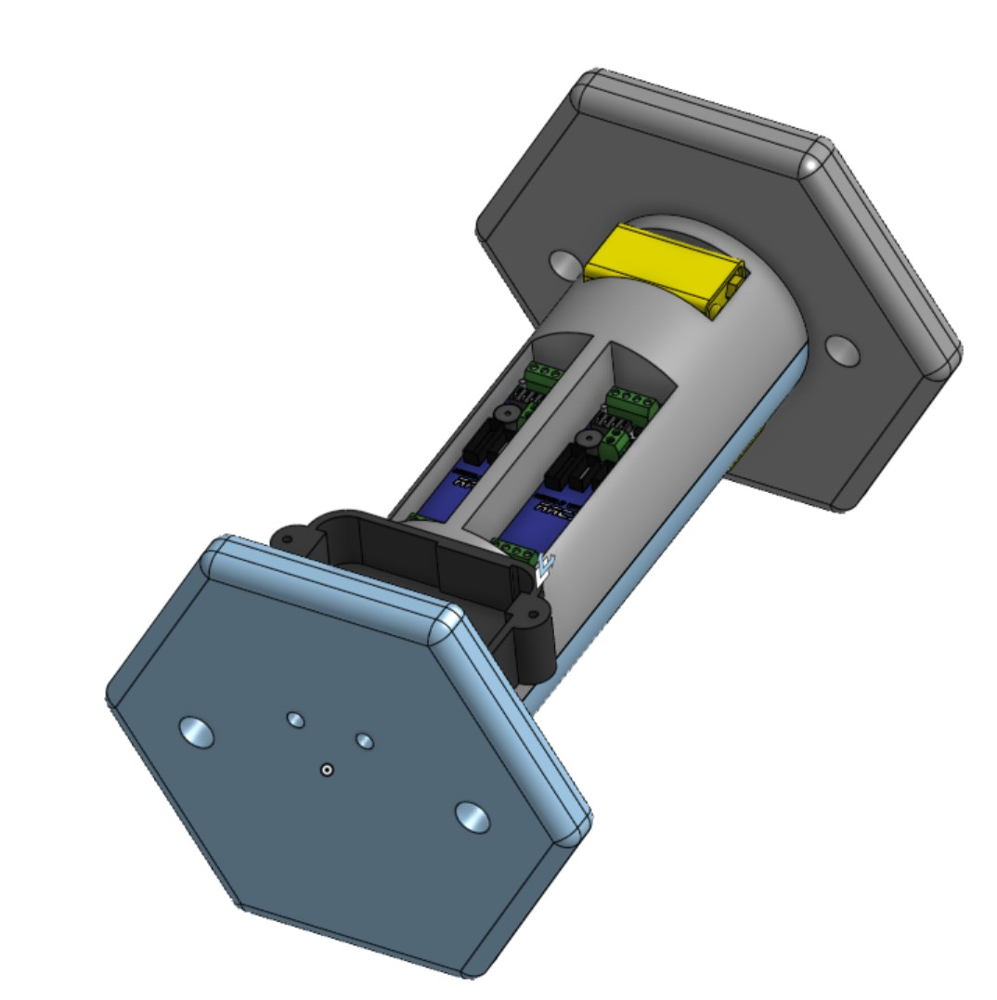
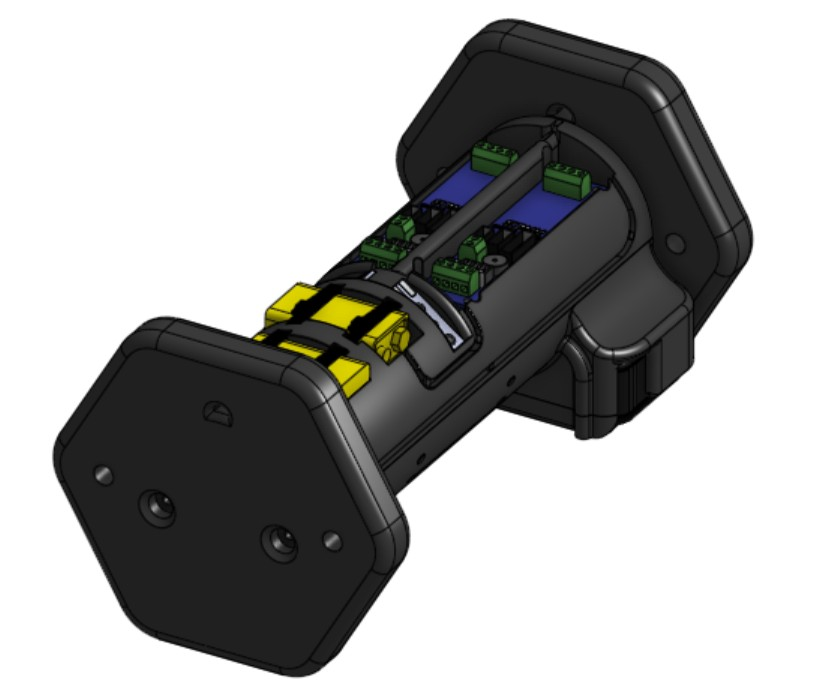
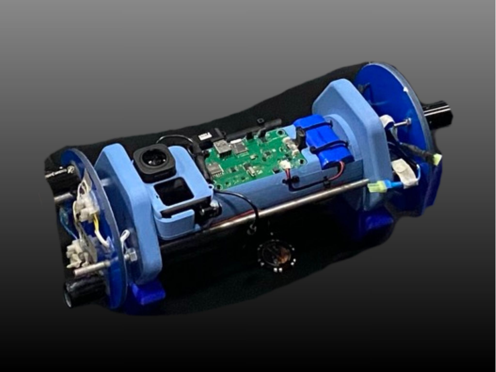

Engineering Challenge
The previous year's avionics sled was very unintuitive and could be difficult to repair, understand, or change out components. As my first year on the Liberty Rocketry team, I was tasked to redesign the avionics sled to make a cool looking, sleek design where wire management was the most paramount factor while still housing all necessary avionics components.


A preliminary and the final design of the Avionics Bay modeled in Onshape are shown above.
The Solution & Iterative Design
The resulting solution was a cylindrical bay that allowed wires to wrap around the face of the structure through slotted grooves. Components were inlayed on the surface to keep the cylindrical footprint of the design.

Both sides of the wired physical model used in the IREC Trinity rocket are shown above.
Flight Performance & Results
The system performed flawlessly during all test flights. The cylindrical design allowed for efficient wire management and easy access to components for maintenance. The use of ABS filament provided the necessary durability and heat resistance for the avionics environment. The design was awarded several on the spot awards from IREC judges for its innovative design, intuitive layout, and cool aesthetic.